IQ Suite is an AI-powered B2B SaaS platform that lets Zurich analyze policies and detect discrepancies between them. This helps the team get ahead of errors that can cause friction with large accounts and significant financial losses.
$1.5M
In discrepancies detected across 11 countries
+159%
Policies analyzed compared to 2025
40%
Less time analyzing documents
17%
Fewer meetings with dashboard and platform data at hand
IQ Suite is an AI-powered B2B SaaS platform that lets Zurich analyze policies and detect discrepancies between them. This helps the team get ahead of errors that can cause friction with large accounts and significant financial losses.
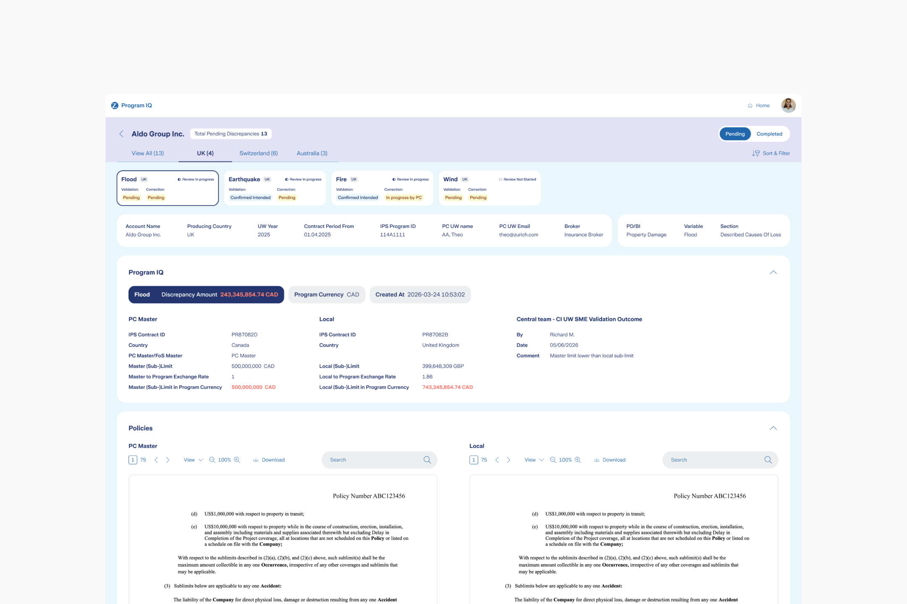
Context
Today, analyzing insurance policies to find inconsistencies and discrepancies is a manual process. Each country has built its own workflow for these tasks. This leaves the company without a consistent approach and creates a lot of manual work that carries unintentional errors. The high volume also makes analyses slow, so teams have to choose which accounts to analyze and which to skip because they lack the time and resources.
What is a discrepancy?
A discrepancy happens when a Master Policy has parameters that don’t match a Local Policy. Large accounts that operate in several countries have a Master Policy that sets the basis of the insurance and its coverages. Each country where the company operates then has its own Local Policy, with variations based on local regulations and economic values. Fire coverage in Los Angeles, USA is not the same as in Bilbao, Spain.
Understanding users
The research process was the foundation for understanding how different countries run these analyses, what processes and tools they use, and what problems come up.
79%
Of users believe they need a tool that speeds up analysis and catches errors before renewals.
98%
Say the current methods are manual and they rely on unfriendly tools like Excel and PowerPoint.
91%
Of managers agree that, without automation, they have to choose which accounts to analyze and which to skip.
Finding solutions
We designed structural flows to present to users and understand where they see value and where they don’t. The use of AI was well received. Most agree they wouldn’t trust it 100% and that a human check is necessary. They also agree that AI finds details the human eye misses.
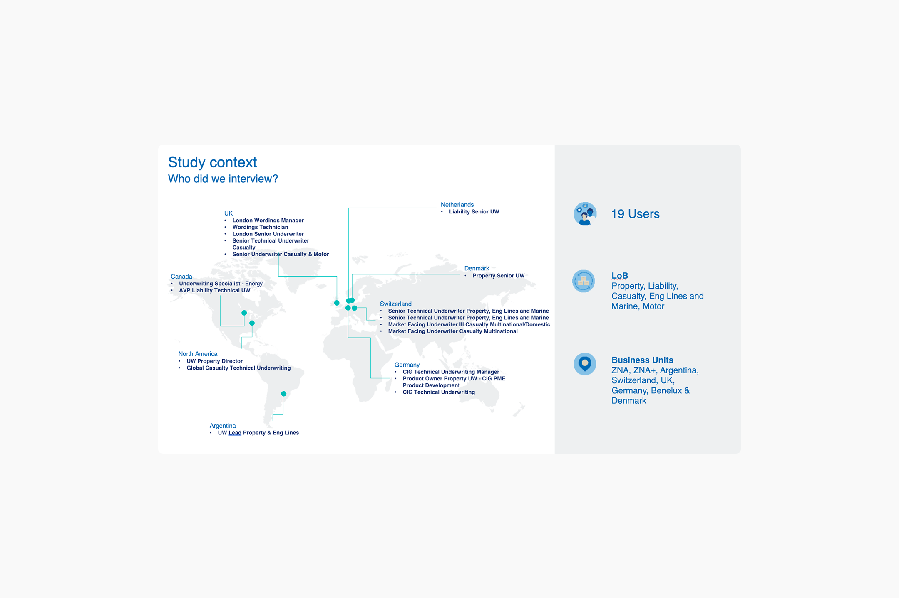
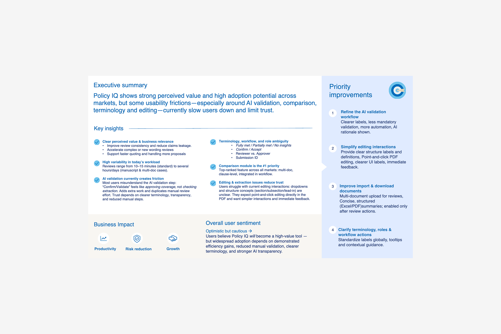
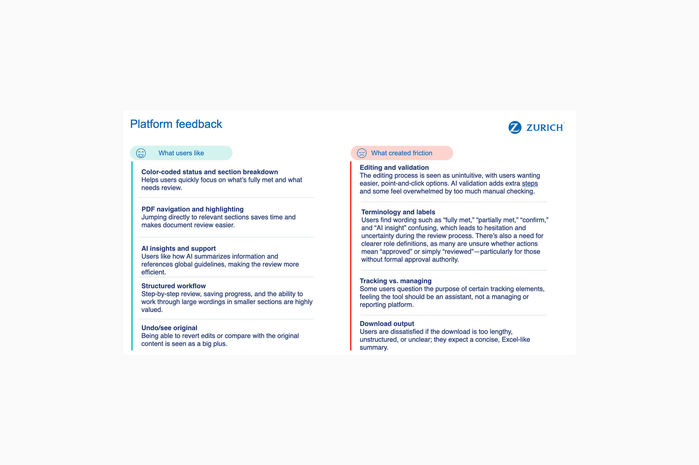
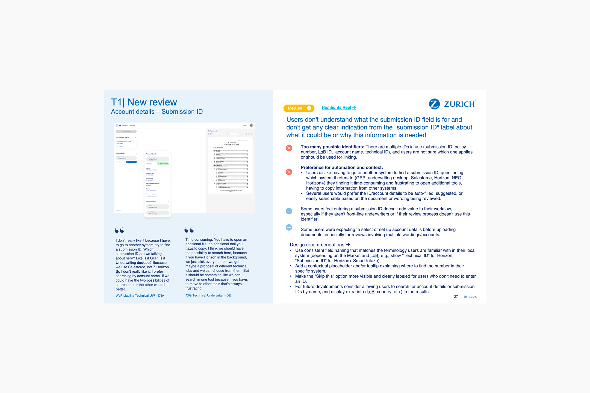
Comparing wordings between two documents
One of the most requested tools, and ideal for policy renewals. The system analyzes the current policy and the upcoming one, looking for differences in legal content. The AI detects new content (added), removed content (removed) and different content (changed).
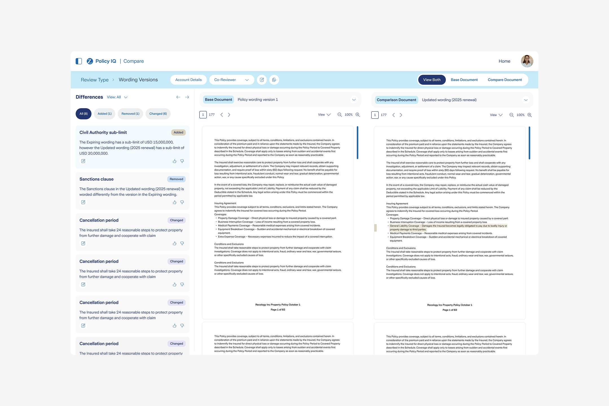
AI validation and comments
To train the AI, we added thumbs so users can simply say whether a finding is OK or not. This way the platform can learn and become more accurate over time. Users can also leave comments to help improve the results in the future.
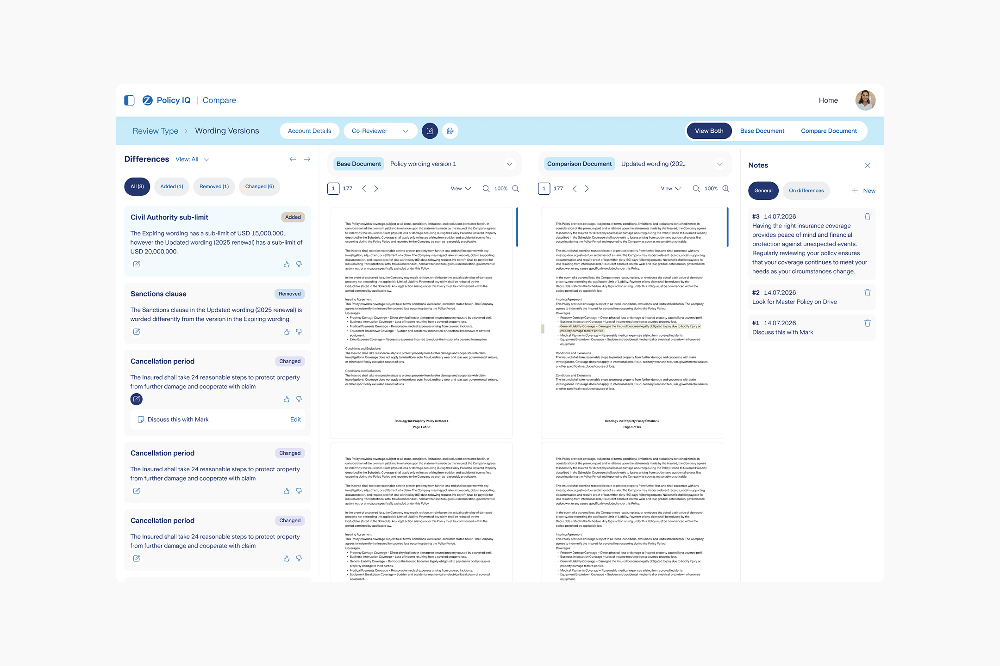
Comparing multiple documents
Users often have to compare several Local policies against one Master. In that case, the platform generates a findings table where they can quickly see the differences between documents. An overall rating ranks the differences, so users can work based on the urgency of each case.
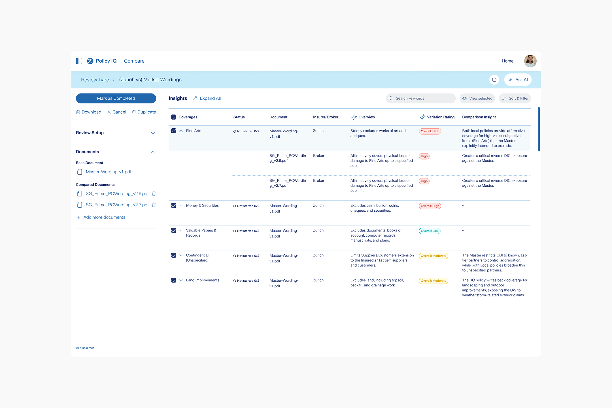
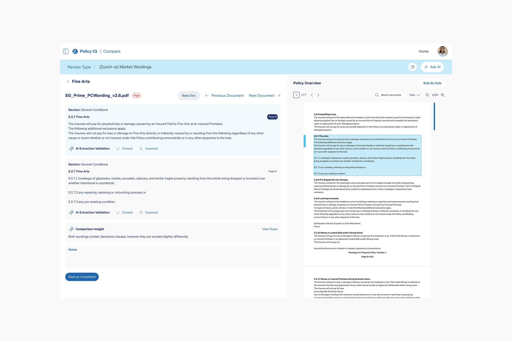
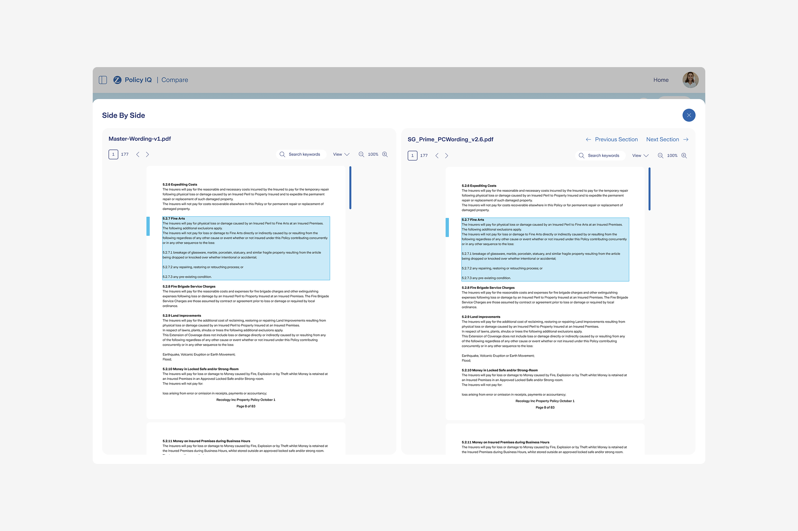
Limits tracker
This section focuses entirely on monetary limit differences. For example, a Master might say that $1 million is covered in case of flood, while a local policy sets a higher limit. When this happens and a claim occurs, more money is paid out than should be. To catch these discrepancies, we designed a feature dedicated entirely to finding and resolving financial differences.
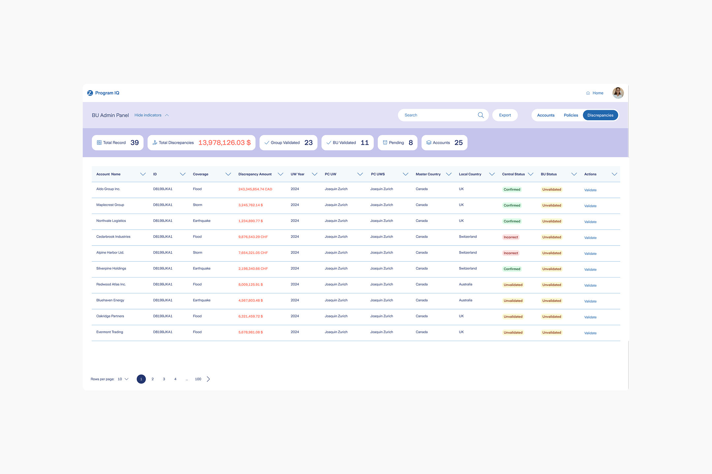
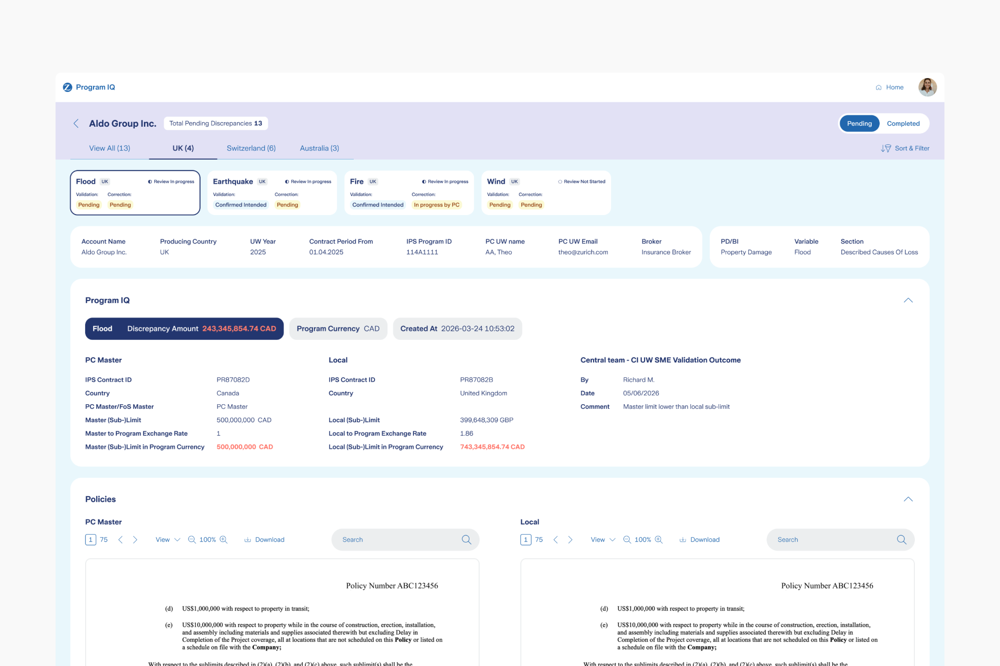
A solution for every level of user
IQ Suite will be used at the technical level by those who build policies, but also by managers and senior stakeholders. To give each user the information they need, we created different dashboards where the information varies based on what each user needs to know.
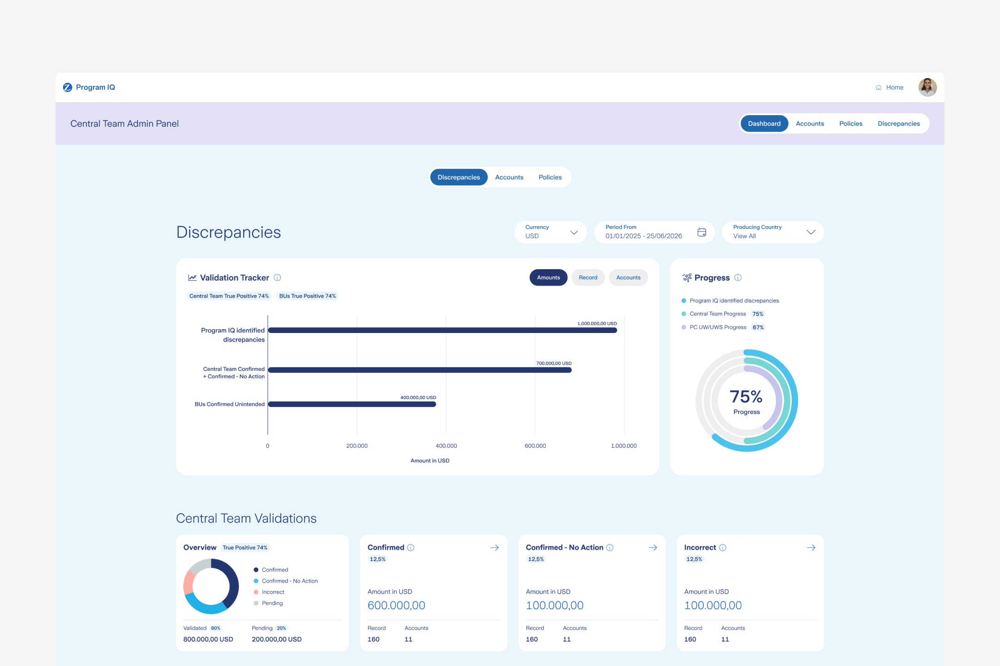
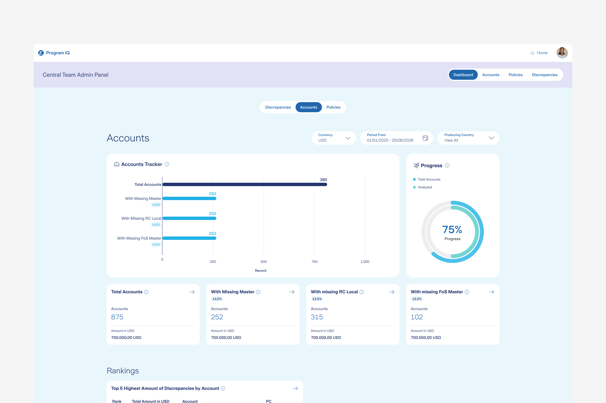
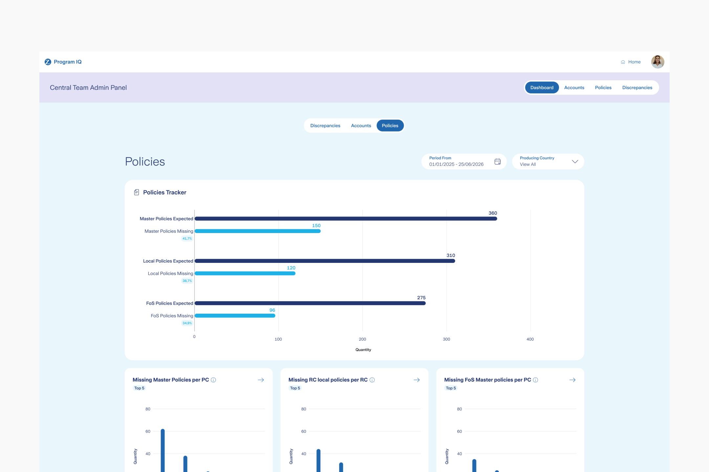
Business impact
$1.5M
In discrepancies detected across 11 countries.
+159%
Policies analyzed compared to 2025.
40%
Less time analyzing documents.
17%
Fewer meetings with dashboard and platform data at hand
Conclusions
Designing this platform wasn’t just a design challenge, but a challenge of logic and business needs. The data being compared is sensitive on one hand and highly technical on the other, and it affects high-level financial results. Creating a workflow and a dedicated tool to replace slow, manual methods has been very rewarding. Seeing users adopt new ways of working and do their jobs better is gratifying. Challenges remain: the AI doesn’t analyze everything perfectly, and different languages and legal terms are hard to handle. False positives create distrust among users and erode their confidence in the tool. We’re working to polish this as much as possible, and fortunately users are positive and collaborative.
Note: some data here has been adjusted for confidentiality and may not be fully exact.